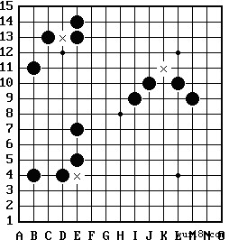

五子棋规则
一、棋盘介绍：
棋盘正中一点为“天元”。棋盘两端的横线称端线。棋盘左右最外边的两条纵线称边线。从两条端线和两条边线向正中发展而纵横交叉在第四条线形成的四个点称为“星”。
以持黑方为准，棋盘上的纵轴线从左到右用英文字母A~O标记。横行线从近到远用阿拉伯数字1~15标记。纵横轴上的横纵线交叉点分别用横纵线标记的名称合写成。如“天元”H8，四个“星”分别为D4、D12、L12、L4等。
二、术语解释：
1. 活三：本方再走一着可以形成活四的三。
2. 活四：有两个点可以成五的四。
3. 冲四：只有一个点可以成五的四。
4. 五连：在棋盘的阳线和阴线任意一条线上，形成的5个同色棋子不间隔的相连。
5. 长连：在棋盘的阳线和阴线任意一条线上，形成的5个以上同色棋子不间隔的相连。
三、比赛规则：
1. 行棋顺序：
黑先、白后，从天元开始相互顺序落子。
2. 胜负判定：
- 最先在棋盘横向、竖向、斜向形成连续的相同色五个棋子的一方为胜。
- 黑棋禁手判负(Lose)，白棋无禁手。黑棋禁手包括“三三”(Double Three)、“四四”(Double Four)和“长连”(Overline)。
- 如下满棋盘仍分不出胜负，则定为平局(Draw)。
- 若黑方五连与禁手同时形成，判黑方胜。
- 黑方禁手形成时，白方应立即指出。若白方未发现或发现后未指明而继续应子，则不能判黑方负。
3.禁手详解：
- 三三禁手：黑棋一子落下同时形成两个或两个以上的活三，此子必须为两个活三共同的构成子。

- 四四禁手：黑棋一子落下同时形成两个或两个以上的冲四或活四。
- 长连禁手：黑棋一子落下形成一个或一个以上的长连。
最后更新：2017/11/18